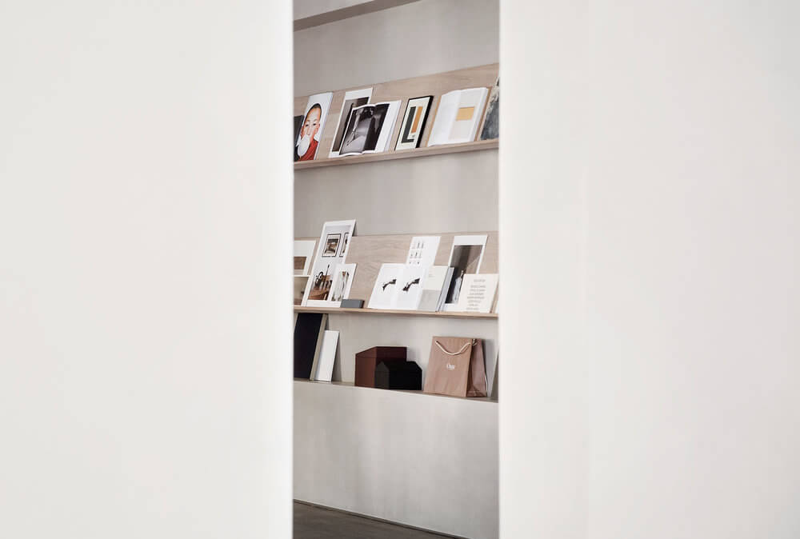
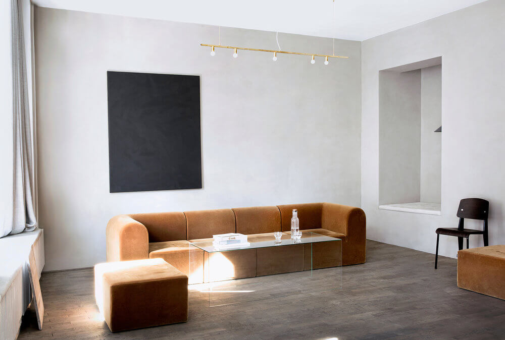
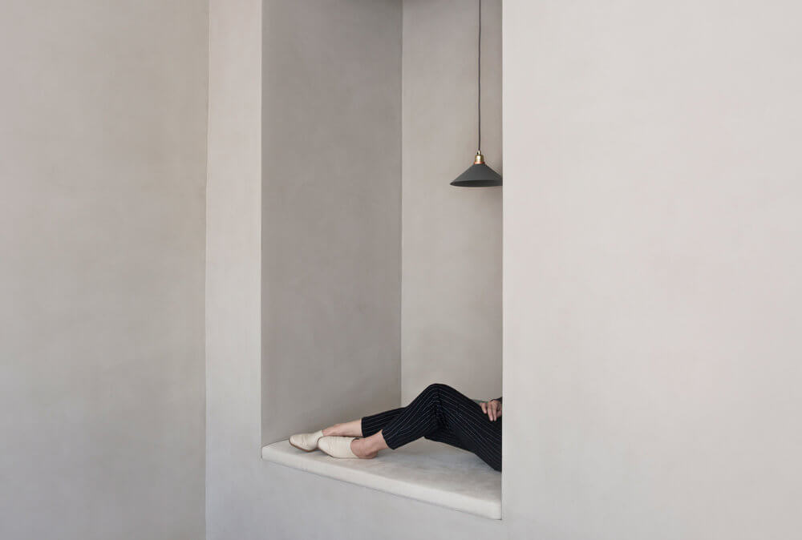

<!DOCTYPE html><html lang="en"><head><meta charset="UTF-8"><meta name="viewport" content="width=device-width, initial-scale=1.0"><meta http-equiv="X-UA-Compatible" content="ie=edge"><link rel="preconnect" href="https://fonts.gstatic.com/" crossorigin="crossorigin"><link rel="stylesheet" href="https://fonts.googleapis.com/css?family=EB+Garamond:500,700|Play:700&amp;display=swap"><link rel="stylesheet" href="main.eaffbf18.css"><script src="main.426b1d0a.js" defer></script><title>Charm</title></head><body></body></html><header class="header page-gallery"><nav><a class="header__logo" href="index.html">Charm</a><input type="checkbox" id="menu" name="menu"><label class="show-menu-btn" for="menu" aria-labelledby="menu">X</label><ul class="header__nav"> <li class="header__nav-item"><a href="index.html">Work</a></li><li class="header__nav-item"> <a href="gallery.html">Gallery</a></li><li class="header__nav-item"> <a href="info.html">Info</a></li></ul></nav></header><main class="main page-gallery"> <section class="section1"><h1 class="prequote-heading">Welcome to The Kinkfolk Gallery</h1><div> <p class="quote-text quote-text--right">Designed by Norm Architects, The Kinfolk Gallery is a collaborative, multifunctional space in the heart of Copenhagen where our friends and partners come together to share ideas and showcase their work.</p><p class="quote-text quote-text--right">Co-created in partnership with some of the world’s leading interiors brands, The Kinfolk Gallery is available to host a variety of events, such as art exhibitions, visiting pop-up shops, guest lectures, fashion showings, workshops, dinner gatherings and photo shoots.</p></div></section><section class="section2"><div class="slider" id="main-slider"><div class="slider-wrapper"></div></div></section><section class="section3"><div><div class="motion-heading">Partners</div><div class="motion-content"> <p>The Kinfolk Gallery was co-created in partnership with some of the world’s top interiors brands.</p><a class="link" href="#">Apparatus</a><a class="link" href="#">B&O Play</a><a class="link" href="#">Dinesen</a><a class="link" href="#">Fade Acoustic Ceilings</a><a class="link" href="#">Lambert & Fils</a><a class="link" href="#">Kabe</a><a class="link" href="#">Kvadrat</a><a class="link" href="#">Menu</a><a class="link" href="#">Muuto</a><a class="link" href="#">Norm Architects</a><a class="link" href="#">Paustian</a><a class="link" href="#">Reform</a><a class="link" href="#">Rich Brilliant Willing</a><a class="link" href="#">Sørensen Leather</a><a class="link" href="#">Vitra</a><a class="link" href="#">Vola</a><a class="link" href="#">Ole Palsby Design</a></div></div><div><div class="motion-heading">Contact</div><div class="motion-content">For more information about The Kinfolk Gallery, press, and venue inquires, please feel free to contact <a class="link" href="mailto:press@kinfolk.com">press@kinfolk.com</a></div></div></section></main><footer class="footer"> <ul class="footer__contacts"><li><ul><li> Developed by Sergey Zakharov</li><li> 2019</li><li> Designed by Ouur Media</li></ul></li><li><ul><li> <a href="mailto:zakharov.nsg@gmail.com">zakharov.nsg@gmail.com </a></li><li> <address>Russia, Yekaterinburg</address></li><li><a href="https://www.instagram.com/ouur/" target="blank">Instagram </a></li></ul></li></ul></footer><script src="slider.35d3355b.js" defer></script>